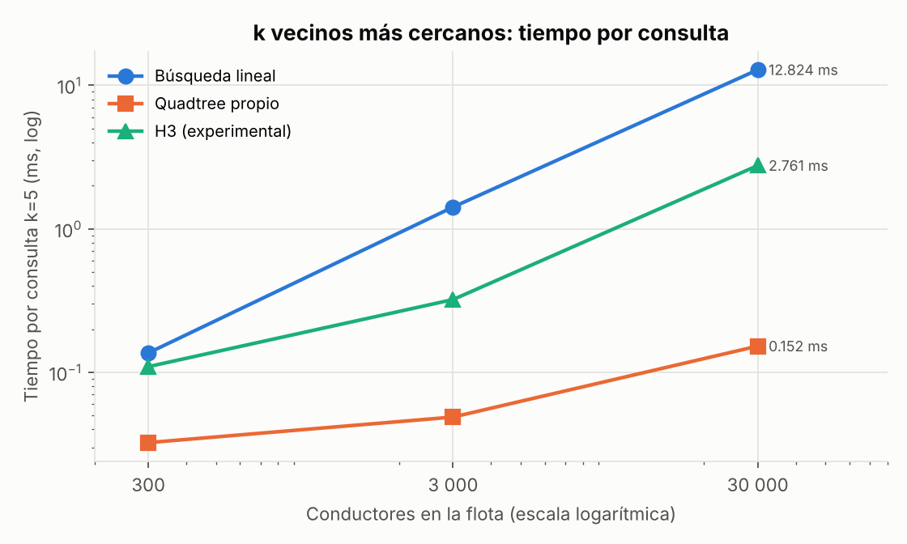
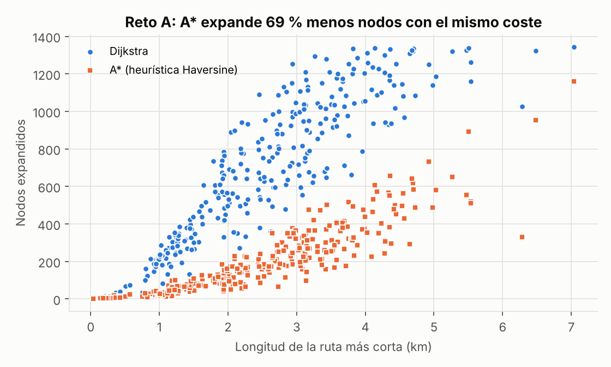
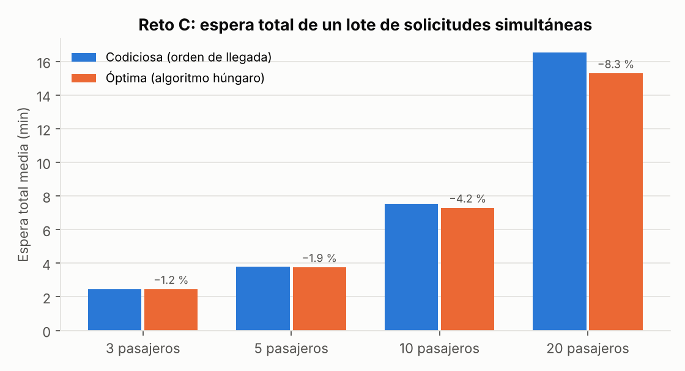

Quadtree propio + heap + Haversine para encontrar candidatos, Dijkstra propio para el ETA real por calles, sobre la red vial real de Miraflores.
intersecciones · 2 670 tramos dirigidos (1 833 de sentido único)
Quadtree frente a búsqueda lineal con 30 000 conductores
distancias de Dijkstra idénticas a networkx
Navegación: ← → o barra espaciadora · T cronómetro · F pantalla completa
Pedir viajes por dirección, coordenadas y mapa; ver la asignación por menor ETA; simulación por turnos; mapas folium; pruebas.
Cada integrante debe poder explicar Quadtree, Dijkstra, Haversine, simulación, benchmark y retos (ver «Preguntas difíciles»).
Cambio pedido por el docente: localizar el archivo, editar, ejecutar la prueba correspondiente (ver «Ejercicios»).
| Conductor | Línea recta | ETA por calles |
|---|---|---|
| Más cercano | 110 m | 112 s |
| Seleccionado | 228 m | 29 s |
En 3 de los 4 mapas generados el asignado no es el más cercano en línea recta.
docker compose up -d → http://localhost:8080 (ya levantado antes de entrar).-12.11103, -77.03366.mapas/asignacion_1_parque_kennedy.html y ejecutar pytest -q.python -m api.worker # terminal 1
uvicorn api.main:app # terminal 2 → http://localhost:8000
python -m scripts.generar_mapas
python -m pytest -qLa red vial está guardada en datos/miraflores.graphml: la demo no depende de descargar OSM.
Coordinación explícita: el backend nunca modifica la flota; inserta comandos y lee la instantánea. El worker los procesa en orden (un solo consumidor) ⇒ imposible asignar el mismo conductor dos veces. Al reiniciar el worker, restaura la instantánea desde PostgreSQL. Los algoritmos no dependen ni de la base de datos ni del frontend (se prueban directamente). V2: Prometheus y Grafana recogen métricas operativas reales (peticiones, latencia, asignaciones, turnos); no sustituyen a los benchmarks.
datos/ red_vial.py · miraflores.graphml (RF-01)
estructuras/ geografia.py (Haversine) · quadtree.py
busqueda_lineal.py (solo referencia)
algoritmos/ grafo.py · dijkstra.py · a_estrella.py
congestion.py · asignacion_multiple.py
simulacion/ modelos.py (Conductor, Pasajero)
flota.py · despachador.py (Despachador)
turnos.py · geocodificacion.py
visualizacion/ mapa_folium.py (RF-07)
experimental/ indice_h3.py (Reto D, aislado)
benchmark/ busqueda · rutas · retos (RF-09)
api/ main.py · worker.py · persistencia.py
frontend/ sitio comercial · tests/ · mapas/Conductor, Pasajero (simulacion/modelos.py), NodoQuadtree, Quadtree (estructuras/quadtree.py), Despachador (simulacion/despachador.py).
Una prueba analiza el AST de la solución: sin shortest_path, nearest_nodes, KDTree, rtree, STRtree ni h3 fuera de experimental/.
LIMAGO_SEMILLA=42: misma flota, mismos movimientos y misma demanda en cada ejecución.
total y disponibles: podar ramas sin conductores libres y decidir fusiones.id → entrada: eliminar / mover / cambiar estado en O(h).lon ≥ centro → este, lat ≥ centro → norte.verificar_consistencia() comprueba todos los invariantes (se usa en pruebas y en la simulación).def _dividir_si_corresponde(self, hoja):
...
if (len(nodo.puntos) <= self.capacidad
or nodo.profundidad >= self.profundidad_maxima
or nodo.puntos_coincidentes()):
continue # no se divide
nodo.hijos = [NodoQuadtree(r, nodo.profundidad + 1)
for r in nodo.limites.subdividir()]frontera: min-heap de nodos por cota inferior de distancia a su rectángulo.mejores: max-heap de tamaño k (valores negados en heapq).R·|Δφ| (latitud) y R·asin(cos φ·sin Δλ) (distancia a un meridiano); se toma el máximo.while frontera:
cota, _, nodo = heapq.heappop(frontera)
if len(mejores) == k and cota > -mejores[0][0]:
break # poda
if nodo.hijos is None:
for p in nodo.puntos:
if solo_disponibles and not p.disponible: continue
d = haversine_metros(lat, lon, p.lat, p.lon)
clave = (-d, -p.id)
if len(mejores) < k: heapq.heappush(mejores, clave)
elif clave > mejores[0]: heapq.heapreplace(mejores, clave)
else:
for hijo in nodo.hijos: ... # push con su cotaalgoritmos/grafo.py) con listas de adyacencia directa e inversa; se conserva la arista paralela más corta.heapq con borrado perezoso; parada temprana al asentar los objetivos.def calcular_eta(self, pasajero, candidatos):
_, inversa = self._adyacencias()
resultado = distancias_hacia_destino(
inversa, pasajero.nodo, nodos.values())
for c in candidatos:
if nodo not in resultado.asentados:
continue # ETA infinito
c.ruta = reconstruir_ruta_hacia(...)
c.distancia_calles_m = self.grafo.longitud_ruta(c.ruta)
c.eta_s = eta_segundos(c.distancia_calles_m,
self.velocidad_kmh)
mejor = min(alcanzables,
key=lambda c: (c.eta_s, c.distancia_recta_m, c.conductor_id))Conductores en orden de id: disponible → paseo aleatorio por calles vecinas; en camino → sigue la ruta al pasajero; en viaje → sigue la ruta al destino y queda libre.
Solo se avanza por aristas existentes; el avance parcial se acumula en avance_m. Las posiciones siempre son intersecciones.
Despachador.mover_conductor actualiza la flota y el Quadtree en la misma operación; cambiar_estado ajusta los contadores.
Pausar, continuar, avanzar n turnos y reiniciar con semilla y tamaño de flota. Instantánea serializable ⇒ restauración exacta (probado).
| Operación | Costo | Por qué |
|---|---|---|
| Haversine | O(1) | Operaciones trigonométricas fijas |
| insertar / cambiar_disponibilidad | O(h) | Un camino raíz-hoja; h ≤ 18 (≈ log₄ n con datos dispersos) |
| eliminar / actualizar_posicion | O(h + c) | Fusión o reinserción tocan ≤ c = 8 puntos |
| buscar_rectangulo | O(h + v + m) | v nodos que intersectan, m resultados; peor caso O(n) |
| buscar_k_cercanos | ≈ O(log n + k log k) | Datos dispersos; peor caso (todos coincidentes) O(n log k) |
| Búsqueda lineal | O(n log k) | n distancias + heap de tamaño k |
| Dijkstra / A* | O((V + E) log V) | Cada arista se relaja una vez; operaciones de heap O(log V) |
| Húngaro (Reto C) | O(p² m) | p pasajeros, m candidatos |

| Conductores | Lineal | Quadtree | × | Distancias QT |
|---|---|---|---|---|
| 300 | 0,137 ms | 0,032 ms | 4,2 | 19 |
| 3 000 | 1,418 ms | 0,049 ms | 29,0 | 32 |
| 30 000 | 12,824 ms | 0,152 ms | 84,2 | 173 |

distancias idénticas (diferencia máx. 0 m; tolerancia 1e-6 m)
nodos expandidos por A* (208 frente a 678) con el mismo coste
Tiempo por par: Dijkstra propio 0,467 ms · networkx 1,200 ms · A* 0,333 ms. networkx recorre el MultiDiGraph con diccionarios de atributos; nuestra adyacencia ya trae el peso mínimo.
Admisibilidad: osmnx calcula length con arcos de círculo máximo y radio 6 371 009 m; nuestro Haversine usa el mismo radio ⇒ h(n) ≤ coste real y consistente por la desigualdad triangular.
Peso = longitud / velocidad libre × factor horario por tipo de vía. 8:00 → 8,6 min medios; 15:00 → 4,4 min. 215/300 rutas cambian de trazado y 9/100 asignaciones eligen otro conductor. mapas/reto_b_congestion_8_vs_15.html
Matriz de ETA pasajeros × candidatos; óptimo validado contra fuerza bruta. Espera total −1,2 % (3 pasajeros) a −8,3 % (20) frente a la estrategia codiciosa.

Aislado en experimental/. Anillos de hexágonos con cota de parada conservadora: mismos resultados que la lineal, pero 2,76 ms frente a 0,15 ms del Quadtree con 30 000 conductores: resolución fija, sin adaptarse a la densidad.
python -m pytest -q
.....................................
86 passed (65 de V1/V2 + 21 de V3)Porque solo se descarta un nodo cuando una cota inferior garantizada de su distancia supera la k-ésima mejor distancia real; ningún punto dentro puede estar más cerca. Además se verificó contra la lineal.
No se subdivide (sería infinito): la hoja actúa como cubeta. La profundidad máxima (18) limita los casos casi idénticos. La búsqueda debe examinar toda la cubeta: por eso con 30 000 conductores en intersecciones la ganancia es ×84 y no ×252.
Queremos distancias de k conductores hacia el pasajero. En el grafo invertido, la distancia pasajero→x es la distancia real x→pasajero. Una ejecución en lugar de k.
No necesariamente: un conductor fuera de los k más cercanos en línea recta podría llegar antes. Es el compromiso de la guía (RF-04/05); aumentar k reduce ese riesgo a cambio de más cálculo.
El costo de visitar nodos, calcular cotas y usar dos heaps es comparable a calcular 300 Haversine. El índice se amortiza cuando n crece.
El worker procesa los comandos en orden (un solo consumidor) y el Despachador usa un candado y verifica que el conductor siga disponible antes de ocuparlo. Probado con 25 hilos concurrentes.
Un grado de longitud mide distinto según la latitud (cos φ). Haversine da metros sobre la esfera y es estable numéricamente para distancias cortas.
La distancia de círculo máximo es la mínima posible sobre la esfera; las calles miden lo mismo o más (osmnx suma arcos con el mismo radio). Con pesos en segundos dividimos por la velocidad libre máxima.
300 pares aleatorios + un árbol completo; tolerancia 1e-6 m justificada por el redondeo float64. La diferencia medida fue 0.
Seis vecinos equidistantes (los cuadrados tienen 8 a dos distancias), anillos más circulares, menos sesgo direccional. Costo: jerarquía aproximada y 12 pentágonos por resolución.
La red vial sí (OpenStreetMap, guardada localmente). La flota, la demanda y la congestión son simuladas, y así se indica en la web y en el informe.
Para coordinar procesos (cola de comandos e instantánea) y persistir el historial; las búsquedas espaciales nunca se delegan a la base de datos.
config/ajustes.py → k_candidatos, velocidad_promedio_kmh (o variables LIMAGO_*). Prueba: pytest tests/test_despachador.py.
Despachador.elegir_mejor: cambiar la clave a (c.eta_s, c.distancia_calles_m, c.conductor_id).
def buscar_en_radio(self, lat, lon, radio_m):
caja = Rectangulo.alrededor(lat, lon, radio_m)
return [i for i in self.buscar_rectangulo(caja, True)
if haversine_metros(lat, lon,
*self.obtener_posicion(i)) <= radio_m]LIMAGO_CAPACIDAD_NODO=4 y volver a correr python -m benchmark.benchmark_busqueda: comparar profundidad y tiempos.
Con grafo.adyacencia_ponderada(lambda u, v, d: math.inf if d.tipo_via == "trunk" else d.longitud) y ruta_mas_corta.
len(quadtree.buscar_rectangulo(rect, solo_disponibles=True)); o leer nodo.disponibles de los nodos totalmente contenidos.
Ubicación del navegador con permiso (una sola vez, nunca bloquea), autocompletado de direcciones reales y solo el destino a escribir. El pasajero no configura tráfico ni algoritmos.
50 distritos, 152 441 intersecciones, 33 084 km. Cobertura por polígono real (ray casting propio = shapely en 400 puntos). Formato compacto propio: carga en 2–3 s.
Reloj de Lima → nivel de tráfico (modelo horario, no tráfico real). Ofertas secuenciales por ETA con plazo; conductores que aceptan, rechazan, no responden o se desconectan; recogida y viaje automáticos.
Alerta simulada, deduplicada; el Quadtree propio elige la unidad de apoyo más cercana. Sin conexión con Policía, SAMU ni serenazgo.
?v=3.python -m benchmark.benchmark_metropolitano
Quadtree 30 000: x232,8 · 300/300 idénticos
Dijkstra 25–40 km: mediana 287 ms
Dijkstra = networkx: 20/20
Despacho (2 500, k=8): mediana 1,1 msPrueba de punta a punta (Playwright, local y Docker): 30/30. Detalle en docs/MEJORAS_V3.md.
De 30 000 distancias a ~173 por consulta, con resultados exactos. Con flotas pequeñas la ventaja es menor: medir antes de suponer.
Con 1 833 tramos de sentido único, el ETA por calles cambia la decisión en la mayoría de los mapas de ejemplo.
Semilla fija, red guardada, benchmarks y mapas regenerables con un comando, Docker Compose y pruebas automatizadas.
Flota, demanda y congestión simuladas; posiciones discretizadas en intersecciones; k candidatos no garantizan el óptimo global.